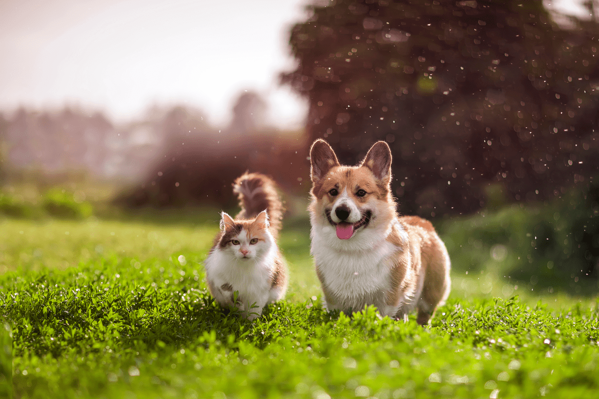

¿Sabías que alimentar adecuadamente a nuestras mascotas es fundamental para su salud y bienestar?
Una nutrición balanceada proporciona los nutrientes esenciales que necesitan para mantener un sistema inmunológico fuerte, un peso saludable y un pelaje brillante. Sin embargo, ¿te has detenido a pensar en las consecuencias de alimentarlos de manera incorrecta? La mala alimentación puede acarrear problemas graves, como la obesidad, desequilibrios nutricionales, deficiencias vitamínicas y minerales, problemas digestivos y un debilitamiento del sistema inmunológico. Además, una dieta inadecuada puede disminuir la calidad y la esperanza de vida de nuestras queridas mascotas. Afortunadamente, gracias a los productos de NutriMascotas, ahora tenemos la posibilidad de atender este problema. Sus alimentos y suplementos están formulados por expertos en nutrición animal para proporcionar a nuestras mascotas una dieta equilibrada y adaptada a sus necesidades específicas. Con NutriMascotas, podemos brindarles a nuestros compañeros peludos una alimentación adecuada que los mantendrá saludables y felices a lo largo de su vida.
¿Quiénes Sómos?
Somos un establecimiento dedicado a proporcionar productos de alta calidad para el cuidado y bienestar de tus queridas mascotas. En nuestra tienda, entendemos la importancia de brindar una nutrición adecuada para nuestros amigos peludos. Es por eso que nos especializamos en la venta de alimentos premium para perros y gatos. Trabajamos con marcas reconocidas y confiables que ofrecen una amplia gama de opciones nutricionales para satisfacer las necesidades específicas de cada animal. Además de nuestra amplia gama de productos, nuestro personal amable y conocedor está siempre dispuesto a brindarte asesoramiento y recomendaciones personalizadas. Comprendemos que cada animal es único y puede tener necesidades específicas, por lo que estamos aquí para ayudarte a encontrar los productos más adecuados para tu mascota. ¡Gracias por ser parte de nuestra comunidad de fans de los animales!